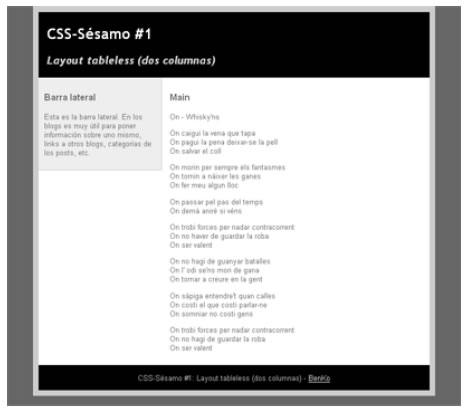

CSS
Layout tableless a dos columnas
En este capítulo veremos cómo crear un layout sin tablas a dos columnas, muy típico en los blogs. Es bastante sencillo de seguir, y es un ejemplo de que dejar de usar tablas para maquetar no tiene por qué ser un proceso doloroso.
Características
Esta maquetación tiene las siguientes propiedades:
- Anchura fija
- Centrado
- 2 columnas (una de ellas de barra lateral)
- Cabecera (header)
- Pie de página (footer )
Puedes echarle una ojeada en la figura.

Código XHTML
El esqueleto del código XHTML de nuestra página es el siguiente (iría dentro del <body>):
<div id="container">
<div id="header">
<h1>Título </h1>
<h2>Subtítulo </h2>
</div>
<div id="sidebar">
<h3>Menú</h3>
<p>Bla bla ... </p></div>
<div id="main">
<h3>Contenido principal</h3>
<p>Bla bla ... </p>
<p> </p>
<p> </p>
<p> </p>
</div>
<div id="footer">
<p>Pie de página</p>
</div >
</div >Como ves, tenemos cuatro capas. Ahora veremos el código CSS de cada una de ellas.
#container
Esta capa es un contenedor para el resto de la página. Establece la anchura de todo y es la que centra el contenido. El truco está en usar auto dentro de margin para lograr el centrado. Esto no funciona en el IE, así que tendremos que echar mano de text-align: center en el body. El CSS completo es este:
body {
text-align: center;
background: #999999;
}
#container {
width: 700px;
margin: 0px auto;
text-align: left;
background: #666666;
}#sidebar
Esta es la barra lateral tan famosa en los blogs. En otras páginas web, podemos poner ahí menús, publi, o cualquier otra cosa. La clave en esta capa es usar float: left, que la sitúa a la izquierda y hace que todos los demás elementos la rodeen. Aquí va el código:
#sidebar {
width: 200px;
padding: 10px;
background: #CCCCCC;
float: left;
}El padding no es obligatorio, pero lo he puesto para después poder explicar bien la siguiente capa. También es necesario especificar el ancho en píxeles. Ah, con este método la barra no se extenderá hasta abajo, sino que se corta en su final (esto se ve bien en la figura de arriba). Si pones la barra de otro color, y quieres que llegue hasta abajo, puedes usar la técnica de Faux Columns1.
#main
Esta es la capa donde irá el contenido (en un blog, esto serían los posts). Lo importante en esta capa es indicar con margin-left la distancia desde el borde del #container hasta esta capa, pasando por encima de la barra lateral.
Nuestra barra lateral tiene 200 píxeles de ancho y 10 píxeles de padding a la izquierda y a la derecha. Si hacemos memoria del modelo de caja, el margen izquierdo que tenemos que indicar serían 200 + 10 + 10 + X, donde X es la cantidad que nosotros queremos dejar de separación entre la barra lateral y el contenido principal. Para el ejemplo, pondremos 5 píxeles:
#main {
margin-left: 225px;
background: #FFFFFF;
}#footer
La capa del pie de página viene bien para poner información de copyright/copyleft o cualquier otro tipo de datos misceláneos.
Aquí únicamente hemos de tener cuidado de “anular” el float que tiene la barra lateral mediante un clear:
#footer {
clear: both;
background:#000000;
color: #FFFFFF;
}¡Ya tenemos nuestro propio layout tablas que cumple los estándares del W3C!